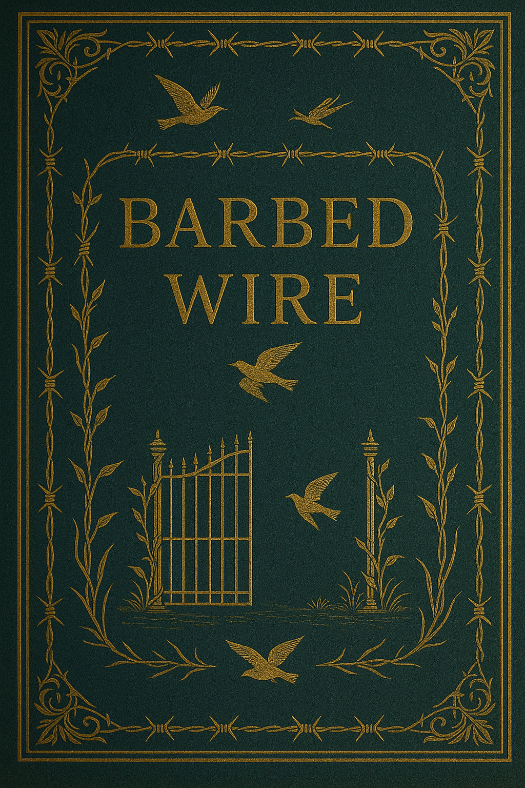
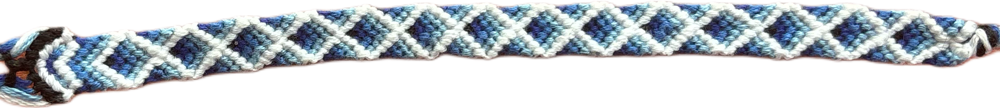

I’m lucky to be surrounded by incredibly creative friends, each with their own unique talents and passions. Whether it’s photography, writing, pottery, music, or other handmade crafts, their work constantly inspires me and pushes me to keep creating. This page is dedicated to showcasing their amazing creations — a small gallery of the beauty and imagination they bring into the world. From bold, expressive art to thoughtful, intricate designs, every piece here reflects the heart and soul of someone I’m proud to know. Sharing their work is my way of honoring the creative community that surrounds me and keeps me motivated every day.
My mother was the person who really taught me to express myself creatively. She made my halloween costumes when she could, and really sparked my inner crafter.
This song was written, sung, and produced by my fiance, Scott. He's an extremely talented musician, and it's amazing to watch his creativity flow.
This video was fully created and brought to life by my fiance. He attends UC's CCM for media production and wants to become a director.
My brother-in-law, Beck, is a potter, and makes beautiful ceramic creations. This vase is one of my favorites.
This photograph was taken by one of my best friends. He's really got such a cinematic eye that I admire.
My mother-in-law, Niki, is a crocheter like me. She's like a machine the way she cranks out projects! This pillow was made by her.

Clicking on this bookcover will take you to a poem written by Mikey. He's a journalism major here at UC!
This is another vase made by Beck. This one reminds me of a stormy ocean. Breathtaking!
Another pillow made by Niki, she free-handed this project!

Another one of my best friends makes the cutest bracelets. She has probably made millions of these guys, each one incredibly unique and beautiful.